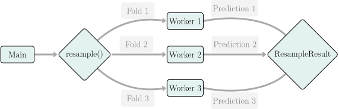

Michel Lang Research Center Trustworthy Data Science and Security, and TU Dortmund University
Sebastian Fischer Ludwig-Maximilians-Universität München, and Munich Center for Machine Learning (MCML)
Raphael Sonabend Imperial College London
In the previous chapters, we demonstrated how to turn machine learning concepts and methods into code. In this chapter we will turn to those technical details that can be important for more advanced uses of mlr3, including:
The term parallelization refers to running multiple algorithms in parallel, i.e., executing them simultaneously on multiple CPU cores, CPUs, or computational nodes. Not all algorithms can be parallelized, but when they can, parallelization allows significant savings in computation time.
In general, there are many possibilities to parallelize, depending on the hardware to run the computations. If you only have a single CPU with multiple cores, then threads or processes are ways to utilize all cores on a local machine. If you have multiple machines on the other hand, they can communicate and exchange information via protocols such as network sockets or the Message Passing Interface. Larger computational sites rely on scheduling systems to orchestrate the computation for multiple users and usually offer a shared network file system all machines can access. Interacting with scheduling systems on compute clusters is covered in Section 11.2 using the R package batchtools.
There are a few pieces of terminology associated with parallelization that we will use in this section:
The parallelization backend is the hardware to parallelize with a respective interface provided by an R package. Many parallelization backends have different APIs, so we use the future package as a unified, abstraction layer for many parallelization backends. From a user perspective, mlr3 interfaces with future directly so all you will need to do is configure the backend before starting any computations.
The Main process is the R session or process that orchestrates the computational work, called jobs.
Workers are the R sessions, processes, or machines that receive the jobs, perform calculations, and then send the results back to Main.
Parallelization Backend
An important step in parallel programming involves the identification of sections of the program flow that are both time-consuming (‘bottlenecks’) and can run independently of a different section, i.e., section A’s operations are not dependent on the results of section B’s operations, and vice versa. Fortunately, these sections are usually relatively easy to spot for machine learning experiments:
Training of a learning algorithm (or other computationally intensive parts of a machine learning pipeline) may contain independent sections which can run in parallel, e.g.
A single decision tree iterates over all features to find the best split point, for each feature independently.
A random forest usually fits hundreds of trees independently.
The key principle that makes parallelization possible for these examples (and in general in many fields of statistics and ML) is called data parallelism, which means the same operation is performed concurrently on different elements of the input data. Parallelization of learning algorithms is covered in Section 10.1.1.
Resampling consists of independent repetitions of train-test-splits and benchmarking consists of multiple independent resamplings (Section 10.1.2).
Tuning (Chapter 4) often is iterated benchmarking, embedded in a sequential procedure that determines the hyperparameter configurations to try next. While many tuning algorithms are inherently sequential to some degree, there are some (e.g., random search) that can propose multiple configurations in parallel to be evaluated independently, providing another level for parallelization (Section 10.1.4).
Predictions of a single learner for multiple observations can be computed independently (Section 10.1.5).
Data Parallelism
These examples are referred to as “embarrassingly parallel” as they are so easy to parallelize. If we can formulate the problem as a function that can be passed to map-like functions such as lapply(), then you have an embarrassingly parallel problem. However, just because a problem can be parallelized, it does not follow that every operation in a problem should be parallelized. Starting and terminating workers as well as possible communication between workers comes at a price in the form of additionally required runtime which is called parallelization overhead. This overhead strongly varies between parallelization backends and must be carefully weighed against the runtime of the sequential execution to determine if parallelization is worth the effort. If the sequential execution is comparably fast, enabling parallelization may introduce additional complexity with little runtime savings, or could even slow down the execution. It is possible to control the granularity of the parallelization to reduce the parallelization overhead. For example, we could reduce the overhead of parallelizing a for-loop with 1000 iterations on four CPU cores by chunking the work of the 1000 jobs into four computational jobs performing 250 iterations each, resulting in four big jobs and not 1000 small ones.
This effect is illustrated in the following code chunk using a socket cluster with the parallel package, which has a chunk.size option so we do not need to manually create chunks:
# set up a socket cluster with 4 workers on the local machinelibrary(parallel)cores=4cl=makeCluster(cores)# vector to operate onx=1:10000# fast function to parallelizef=function(y)sqrt(y+1)# unchunked approach: 1000 jobssystem.time({parSapply(cl, x, f, chunk.size =1)})
Whenever you have the option to control the granularity by setting the chunk size, you should aim for at least as many jobs as workers. However, if there are too few job chunks with strongly dissimilar runtimes, the system may end up waiting for the last chunk to finish, while other resources are idle. This is referred to as synchronization overhead. You should therefore aim for chunks with a runtime of at least several seconds, so that the parallelization overhead remains reasonable, while still having enough chunks to ensure that you can fully utilize the system. If you have heterogeneous runtimes, you can consider grouping jobs so that the runtimes of the chunks are more homogeneous. If runtimes can be estimated, then both batchtools::binpack() and batchtools::lpt() (documented together with the chunk() function) are useful for chunking jobs. If runtimes cannot be estimated, then it can be useful to randomize the order of jobs. Otherwise jobs could be accidentally ordered by runtime, for example because they are sorted by a hyperparameter that has a strong influence on training time. Naively chunking jobs could then lead to some chunks containing much more expensive jobs than others, resulting in avoidable underutilization of resources. mlr3misc ships with the functions chunk() and chunk_vector() that conveniently chunk jobs and also shuffle them by default. There are also options to control the chunk size for parallelization in mlr3, which are discussed in Section 10.1.2.
Synchronization Overhead
Reproducibility
Reproducibility is often a concern during parallelization because special Pseudorandom number generators (PRNGs) may be required (Bengtsson 2020). However, future ensures that all workers will receive the same PRNG streams, independent of the number of workers (Bengtsson 2020). Therefore, mlr3 experiments will be reproducible as long as you use set.seed at the start of your scripts (with the PRNG of your choice).
10.1.1 Parallelization of Learners
At the lowest level, external code can be parallelized if available in underlying implementations. For example, while fitting a single decision tree, each split that divides the data into two disjoint partitions requires a search for the best cut point on all \(p\) features. Instead of iterating over all features sequentially, the search can be broken down into \(p\) threads, each searching for the best cut point on a single feature. These threads can then be scheduled depending on available CPU cores, as there is no need for communication between the threads. After all the threads have finished, the results are collected and merged before terminating the threads. The \(p\) best-cut points per feature are collected and aggregated to the single best-cut point across all features by iterating over the \(p\) results sequentially.
GPU Computation
Parallelization on GPUs is not covered in this book. mlr3 only distributes the fitting of multiple learners, e.g., during resampling, benchmarking, or tuning. On this rather abstract level, GPU parallelization does not work efficiently. However, some learning procedures can be compiled against CUDA/OpenCL to utilize the GPU while fitting a single model. We refer to the respective documentation of the learner’s implementation, e.g., https://xgboost.readthedocs.io/en/stable/gpu/ for XGBoost.
Threading is implemented in the compiled code of the package (e.g., in C or C++), which means that the R interpreter calls the external code and waits for the results to be returned, without noticing that the computations are executed in parallel. Therefore, threading can conflict with certain parallel backends, leading the system to be overutilized in the best-case scenario, or causing hangs or segfaults in the worst case. For this reason, we introduced the convention that threading parallelization is turned off by default. Hyperparameters that control the number of threads are tagged with the label "threads":
lrn_ranger=lrn("classif.ranger")# show all hyperparameters tagged with "threads"lrn_ranger$param_set$ids(tags ="threads")
[1] "num.threads"
# The number of threads is initialized to 1lrn_ranger$param_set$values$num.threads
[1] 1
To enable the parallelization for this learner, mlr3 provides the helper function set_threads(), which automatically adjusts the hyperparameters associated with builtin learner parallelization:
If we did not specify an argument for the n parameter then the default is a heuristic to detect the correct number using availableCores(). This heuristic is not always ideal (interested readers might want to look up “Amdahl’s Law”) and utilizing all available cores is occasionally counterproductive and can slow down overall runtime (Bengtsson 2022), moreover using all cores is not ideal if:
You want to simultaneously use your system for other purposes.
You are on a multi-user system and want to spare some resources for other users.
You have linked R to a threaded BLAS implementation like OpenBLAS and your learners make heavy use of linear algebra.
# auto-detect cores on the local machineset_threads(lrn_ranger)
There are also other approaches for parallelization of learners, e.g. by directly supporting one specific parallelization backend or a parallelization framework like foreach. If this is supported, parallelization must be explicitly activated, e.g. by setting a hyperparameter. If you need to parallelize on the learner level because a single model fit takes too much time, and you only fit a few of these models, consult the documentation of the respective learner. In many scenarios, it makes more sense to parallelize on a different level like resampling or benchmarking which is covered in the following subsections.
10.1.2 Parallelization of Resamplings and Benchmarks
In addition to parallel learners, most machine learning experiments can be easily parallelized during resampling. By definition, resampling is performed by aggregating over independent repetitions of multiple train-test splits.
mlr3 makes use of future to enable parallelization over resampling iterations using the parallel backend, which can be configured by the user via the plan() function.
By example, we will look at parallelizing three-fold CV for a decision tree on the sonar task (Figure 10.1). We use the multisession plan (which internally uses socket clusters from the parallel package) that should work on all operating systems.
library(future)# select the multisession backend to usefuture::plan("multisession")# run our experimenttsk_sonar=tsk("sonar")lrn_rpart=lrn("classif.rpart")rsmp_cv3=rsmp("cv", folds =3)system.time({resample(tsk_sonar, lrn_rpart, rsmp_cv3)})
user system elapsed
0.149 0.001 1.004
By default, all CPUs of your machine are used unless you specify the argument workers in future::plan() (see the previous section for issues that this might cause). In contrast to threads, the technical overhead for starting workers, communicating objects, sending back results, and shutting down the workers is quite large for the "multisession" backend.
The multicore backend comes with more overhead than threading, but considerably less overhead than "multisession", as the "multicore" backend only copies R objects when modified (‘copy-on-write’), whereas objects are always copied to the respective session before any computation for "multisession". The "multicore" backend has the major disadvantage that it is not supported on Windows systems - for this reason, we will stick with the "multisession" backend for all examples here.
In general, it is advised to only consider parallelization for resamplings where each iteration runs at least a few seconds. There are two mlr3 options to control the execution and granularity:
If mlr3.exec_random is set to TRUE (default), the order of jobs is randomized in resamplings and benchmarks. This can help if you run a benchmark or tuning with heterogeneous runtimes.
Option mlr3.exec_chunk_size can be used to control how many jobs are mapped to a single future and defaults to 1. The value of this option is passed to future_mapply() and future.scheduling is constantly set to TRUE.
Tuning the chunk size can help in some rare cases to mitigate the parallelization overhead but is unlikely to be useful in larger problems or longer runtimes.

Figure 10.1: Parallelization of a resampling using three-fold CV. The main process calls the resample() function, which starts the parallelization process and the computational task is split into three parts for three-fold CV. The folds are passed to three workers, each fitting a model on the respective subset of the task and predicting on the left-out observations. The predictions (and trained models) are communicated back to the main process which combines them into a ResampleResult.
Benchmarks can be seen as a collection of multiple independent resamplings where a combination of a task, a learner, and a resampling strategy defines one resampling to perform. In pseudo-code, the calculation can be written as
Parallelize over all resamplings and execute each resampling sequentially (parallelize outer loop); or
Iterate over all resamplings and execute each resampling in parallel (parallelize inner loop).
mlr3 simplifies this decision for you by flattening all experiments to the same level, i.e., benchmark() iterates over the elements of the Cartesian product of the iterations of the outer and inner loops. Therefore, there is no need to decide whether you want to parallelize the tuning or the resampling, you always parallelize both. This approach makes the computation fine-grained and allows the future backend to group the jobs into chunks of suitable size (depending on the number of workers), it also makes the procedure identical to parallelizing resampling:
# simple benchmark designdesign=benchmark_grid(tsks(c("sonar", "penguins")),lrns(c("classif.featureless", "classif.rpart")), rsmp_cv3)# enable parallelizationfuture::plan("multisession")# run benchmark in parallelbmr=benchmark(design)
See Section 11.2 for larger benchmark experiments that may have a cumulative runtime of weeks, months or even years.
10.1.3 Parallelization of Tuning
Tuning is usually an iterative procedure, consisting of steps that are themselves embarrassingly parallel. In each iteration, a tuner proposes a batch of hyperparameter configurations (which could be of size 1), which can then be evaluated in parallel. After each iteration, most tuners adapt themselves in some way based on the obtained performance values. Random and grid search are exceptions as they do not choose configurations based on past results, instead, for these tuners, all evaluations are independent and can, in principle, be fully parallelized.
Tuning is implemented in mlr3 as iterative benchmarks. The Tuner proposes a batch of learners, each with a different configuration in its $param_set$values, where the size of the batch can usually be controlled with the batch_size configuration parameter. This batch is passed to benchmark() with the resampling strategy of the tuning instance.
Since each call to benchmark() depends on previous results, it is generally not possible to parallelize tuning at a higher “level” than individual benchmarks. Instead, the individual benchmark() evaluations are parallelized by mlr3 as if they were experiments without tuning. This means that the individual resampling iterations of each evaluated configuration are all parallelized at the same time. To ensure full parallelization, make sure that the batch_size multiplied by the number of resampling iterations is at least equal to the number of available workers. If you expect homogeneous runtimes, i.e., you are tuning over a single learner or pipeline without any hyperparameters with a large influence on the runtime, aim for a multiple of the number of workers. In general, larger batches allow for more parallelization, while smaller batches imply a more frequent evaluation of the termination criteria. Independently of whether you use parallelization, the termination criteria are only checked between evaluations of batches.
The following code shows a parallelized execution of random search with the termination criterion set to 20 iterations and a moderate batch size, where 36 resampling splits – 12 configurations of three splits each – are evaluated in parallel on four workers. The batch size, set to a multiple of the number of workers, ensures that available resources are used efficiently. However, note that the tuning only terminates after a multiple of the given batch size, in this case after 24 evaluations.
In this example, we could have increased the batch size to 20 to make use of available resources in the most efficient way while stopping exactly at the number of evaluations, however this does not generalize to other termination criteria where we do not know the number of evaluations in advance. For example, if we used trm("perf_reached") with a batch size of 12, then if the first configuration of the batch yielded better performance than the given threshold, the remaining 11 configurations would still be unnecessarily evaluated.
10.1.4 Nested Resampling Parallelization
Nested resampling can conceptually be parallelized at three different levels, each corresponding to jobs of different granularity:
The parallelization of the outer resampling. A job is then the tuning of a learner on the respective training set of the outer resampling splits.
The parallel evaluation of the batch of hyperparameter configurations proposed in one tuning iteration. A job is then, for example, the cross-validation of such a configuration.
The parallelization of the inner resampling in tuning. A job is then a train-predict-score step of a single configuration.
This is demonstrated in the pseudocode below, which is a simplified form of Algorithm 3 from Bischl et al. (2023):
# outer resampling, level 1:for(iinseq_len(n_outer_splits)){# tuning instance, in this example mainly represents the archivetuning_inst=ti(...)inner_task=get_training_task(task, outer_splits[[i]])# tuning loop, the details of which depend on the tuner being used# This does not correspond to a level:while(!tuning_inst$is_terminated){proposed_points=propose_points(tuning_inst$archive, batch_size)# Evaluation of configurations, level 2:for(hp_configurationinproposed_points){split_performances=numeric()# Inner resampling, level 3:for(jinseq_len(n_inner_splits)){split_performances[j]=evaluate_performance(learner, hp_configuration, inner_task, inner_splits[[j]])}performance=aggregate(split_performances)update_archive(tuning_inst$archive, configuration, performance)}}evaluate_performance(learner, tuning_inst$result, task, outer_splits[[i]])}
This algorithm is implemented in mlr3 in a slightly more efficient manner. At the second level (the evaluation of hyperparameter configurations), it exploits the functionality of benchmark(): a Learner object is created for each proposed hyperparameter configuration and all learners are resampled in a benchmark experiment in the innermost for-loop, effectively executing the second level along with the third level on a finer granularity (number of proposed points times number of inner resampling iterations). Hence, when parallelizing nested resampling in mlr3, the user only has to choose between two options: parallelizing the outer resampling or the inner benchmarking.
By example, let us tune the minsplit argument of a classification tree using an AutoTuner (Section 4.2) and random search with only two iterations. Note that this is a didactic example to illustrate the interplay of the different parallelization levels and not a realistic setup. We use holdout for inner resampling and set the batch_size to 2, which yields two independent iterations in the inner benchmark experiment. A five-fold CV is used for our outer resampling. For the sake of simplicity, we will also ignore the final model fit the AutoTuner performs after tuning. Below, we run the example sequentially without parallelization:
We can now either opt to parallelize the outer CV or the inner benchmarking. Let us assume we have a single CPU with four cores (C1 - C4) available and each inner holdout evaluation during tuning takes four seconds. If we parallelize the outer five-fold CV (Figure 10.2), each of the four cores would run one outer resampling first, the computation of the fifth iteration has to wait as there are no more available cores.
# Parallelize outer loopfuture::plan(list("multisession", "sequential"))# Alternative: skip specification of 2nd level, since future# sets all levels after the first to "sequential" by defaultfuture::plan("multisession")
This approach is illustrated in Figure 10.2. Each of the four workers starts with the computation of a different inner benchmark, each of which runs sequentially and therefore takes eight seconds on one worker. As there are more jobs than workers, the remaining fifth iteration of the outer resampling is queued on C1 after the first four iterations are finished after eight seconds. During the computation of the fifth outer resampling iteration, only C1 is busy, the other three cores are idle.
In contrast, if we parallelize the inner benchmark (Figure 10.3) then the outer resampling runs sequentially: the five inner benchmarks are scheduled one after the other, each of which runs its two holdout evaluations in parallel on two cores; meanwhile, C3 and C4 are idle.
Figure 10.2: CPU utilization for four CPUs while parallelizing the outer five-fold CV with a sequential two-fold CV inside. Jobs are labeled as [iteration outer]-[iteration inner].
Figure 10.3: CPU utilization for four cores while parallelizing the inner benchmarking (consisting of two holdout evaluations) with a sequential five-fold CV outside. Jobs are labeled as [iteration outer]-[iteration inner].
In this example, both possibilities for parallelization are not exploiting the full potential of the four cores. With parallelization of the outer loop, all results are computed after 16 seconds, if we parallelize the inner loop we obtain them after 20 seconds, and in both cases some CPU cores remain idle for at least some of the time.
mlr3 and future make it possible to enable parallelization for both loops for nested parallelization, even on different parallelization backends, which can be useful in some distributed computing setups. Note that the detection of available cores does not work for such a nested parallelization and the number of workers must be manually set instead:
# Runs both loops in parallelfuture::plan(list(tweak("multisession", workers =2),tweak("multisession", workers =2)))
This example would run on up to four cores on the local machine: first, two new sessions would be spawned for the outer loop. Both new sessions then spawn two additional sessions each to evaluate the inner benchmark. Although two cores are still idle when the fifth outer resampling iteration runs, this approach reduces the total runtime to 12 seconds, which is optimal in this example.
10.1.5 Parallelization of Predictions
Finally, predictions from a single learner can be parallelized as the predictions of multiple observations are independent. For most learners, training is the bottleneck and parallelizing the prediction is not a worthwhile endeavor, but there can be exceptions, e.g., if your test dataset is very large.
To predict in parallel, the test data is first split into multiple groups and the predict method of the learner is applied to each group in parallel using an active backend configured via plan(). The resulting predictions are then combined internally in a second step. To avoid predicting in parallel accidentally, parallel predictions must be enabled in the learner via the parallel_predict field:
# train random forest on sonar tasktsk_sonar=tsk("sonar")lrn_rpart=lrn("classif.rpart")lrn_rpart$train(tsk_sonar)# set up parallel predict on four workersfuture::plan("multisession", workers =4)lrn_rpart$parallel_predict=TRUE# predictprediction=lrn_rpart$predict(tsk_sonar)
10.2 Error Handling
In large experiments, it is not uncommon that a model fit or prediction fails with an error. This is because the algorithms have to process arbitrary data, and not all eventualities can always be handled. While we try to identify obvious problems before execution, such as when missing values occur for a learner that cannot handle them, other problems are far more complex to detect. Examples include numerical problems that may cause issues in training (e.g., due to lack of convergence), or new levels of categorical variables appearing in the prediction step. Different learners behave quite differently when encountering such problems: some models signal a warning during the training step that they failed to fit but return a baseline model, while other models stop the execution. During prediction, some learners error and refuse to predict the response for observations they cannot handle, while others may predict NA. In this section, we will discuss how to prevent these errors from causing the program to stop when we do not want it to (e.g., during a benchmark experiment).
For illustration (and internal testing) of error handling, mlr3 ships with lrn("classif.debug") and lrn("regr.debug"):
This learner lets us simulate problems that are frequently encountered in ML. It can be configured to stochastically trigger warnings, errors, and even segfaults, during training or prediction.
With the learner’s default settings, the learner will remember a random label and constantly predict this label without signaling any conditions. In the following code we tell the learner to signal an error during the training step:
# set probability to signal an error to `1`lrn_debug$param_set$values$error_train=1lrn_debug$train(tsk_penguins)
Error in .__LearnerClassifDebug__.train(self = self, private = private, : Error from classif.debug->train()
Now we can look at how to deal with errors during mlr3 experiments.
10.2.1 Encapsulation
Encapsulation ensures that signaled conditions (e.g., messages, warnings and errors) are intercepted and that all conditions raised during the training or prediction step are logged into the learner without interrupting the program flow. This means that models can be used for fitting and predicting and any conditions can be analyzed post hoc. However, the result of the experiment will be a missing model and/or predictions, depending on where the error occurs. In Section 10.2.2, we will discuss fallback learners to replace missing models and/or predictions.
Each Learner contains the field $encapsulate to control how the train or predict steps are wrapped. The first way to encapsulate the execution is provided by the package evaluate, which evaluates R expressions and captures and tracks conditions (outputs, messages, warnings or errors) without letting them stop the process (see documentation of encapsulate() for full details):
$encapsulate
# trigger warning and error in traininglrn_debug=lrn("classif.debug", warning_train =1, error_train =1)# enable encapsulation for train() and predict()lrn_debug$encapsulate=c(train ="evaluate", predict ="evaluate")lrn_debug$train(tsk_penguins)
Note how we passed "evaluate" to train and predict to enable encapsulation in both training and predicting. However, we could have only set encapsulation for one of these stages by instead passing c(train = "evaluate", predict = "none") or c(train = "none", predict = "evaluate").
Note that encapsulation captures all output written to the standard output (stdout) and standard error (stderr) streams and stores them in the learner’s log. However, in some computational setups, the calling process needs to operate on the log output, such as the batchtools package in Chapter 11. In this case, use the encapsulation method "try" instead, which catches signaled conditions but does not suppress the output.
After training the learner, one can access the log via the fields log, warnings and errors:
lrn_debug$log
stage class msg
1: train warning Warning from classif.debug->train()
2: train error Error from classif.debug->train()
lrn_debug$warnings
[1] "Warning from classif.debug->train()"
lrn_debug$errors
[1] "Error from classif.debug->train()"
Another encapsulation method is implemented in the callr package. In contrast to evaluate, the computation is handled in a separate R process. This guards the calling session against segmentation faults which otherwise would tear down the complete main R session (if we demonstrate that here we would break our book). On the downside, starting new processes comes with comparably more computational overhead.
lrn_debug$encapsulate=c(train ="callr", predict ="callr")# set segfault_train and remove warning_train and error_trainlrn_debug$param_set$values=list(segfault_train =1)lrn_debug$train(task =tsk_penguins)$errors
[1] "callr process exited with status -11"
As well as catching errors, we can also set a timeout, in seconds, so that learners do not run for an indefinite time (e.g., due to failing to converge) but are terminated after a specified time. This works most reliably when using callr encapsulation, since the evaluate method is sometimes not able to interrupt a learner if it gets stuck in external compiled code. If learners are interrupted, then this is logged as an error by the encapsulation process. Again, the timeout can be set separately for training and prediction:
# near instant timeout for training, no timeout for predictlrn_debug$timeout=c(train =1e-5, predict =Inf)lrn_debug$train(task =tsk_penguins)$errors
[1] "reached elapsed time limit"
With these methods, we can now catch all conditions and post hoc analyze messages, warnings and errors.
Unfortunately, catching errors and ensuring an upper time limit is only half the battle. If there are errors during training then we will not have a trained model to query, or if there are errors during predicting, then we will not have predictions to analyze:
# no saved model as there was an error during traininglrn("classif.debug", error_train =1)$train(tsk_penguins)$model
Error in .__LearnerClassifDebug__.train(self = self, private = private, : Error from classif.debug->train()
# but no predictions due to an error during predictinglrn_debug$predict(tsk_penguins)
Error in .__LearnerClassifDebug__.predict(self = self, private = private, : Error from classif.debug->predict()
Missing learners and/or predictions are particularly problematic during automated processes such as resampling, benchmarking, or tuning (Section 5.1.1), as results cannot be aggregated properly across iterations. In the next section, we will look at fallback learners that impute missing models and predictions.
10.2.2 Fallback Learners
Say an error has occurred when training a model in one or more iterations during resampling, then there are three methods to proceed with our experiment:
Ignore iterations with failures – This might be the most frequent approach in practice, however, it is not statistically sound. Say we are trying to evaluate the performance of a model. This model might error if in some resampling splits, there are factor levels during predicting that were not seen during training, thus leading to the model being unable to handle these and erroring. If we discarded failed iterations, our model would appear to perform well despite it failing to make predictions for an entire class of features.
Penalize failing learners – Instead of ignoring failed iterations, we could impute the worst possible score (as defined by a given Measure) and thereby heavily penalize the learner for failing. However, this will often be too harsh for many problems, and for some measures, there is no reasonable value to impute.
Train and predict with a fallback learner – Instead of imputing with the worst possible score, we could train a baseline learner and make predictions from this model.
Fallback Learner
We strongly recommend the final option, which is statistically sound and can be easily used in any practical experiment. mlr3 includes two baseline learners: lrn("classif.featureless"), which, in its default configuration, always predicts the majority class, and lrn("regr.featureless"), which predicts the average response by default.
To make this procedure convenient during resampling and benchmarking, we support fitting a baseline (though in theory you could use any Learner) as a fallback learner by passing a Learner to $fallback. In the next example, we add a classification baseline to our debug learner, so that when the debug learner errors, mlr3 falls back to the predictions of the featureless learner internally. Note that while encapsulation is not enabled explicitly, it is automatically enabled and set to "evaluate" if a fallback learner is added.
The learner’s log contains the captured error, and although no model is stored as the error was in training, we can still obtain predictions from our fallback:
lrn_debug$log
stage class msg
1: train error Error from classif.debug->train()
In the following snippet, we compare the debug learner with a simple classification tree. We re-parametrize the debug learner to fail in roughly 50% of the resampling iterations during the training step:
Even though the debug learner occasionally failed to provide predictions, we still obtained a statistically sound aggregated performance value which we can compare to the aggregated performance of the classification tree. It is also possible to split the benchmark up into separate ResampleResult objects which sometimes helps to get more context. E.g., if we only want to have a closer look into the debug learner, we can extract the errors from the corresponding resample results:
iteration msg
1: 2 Error from classif.debug->train()
2: 4 Error from classif.debug->train()
In summary, combining encapsulation and fallback learners makes it possible to benchmark and tune unreliable or unstable learning algorithms in a convenient and statistically sound fashion.
10.3 Logging
mlr3 uses the lgr package to control the verbosity of the output, i.e., to decide how much output is shown when mlr3 operations are run, from suppression of all non-critical messages to detailed messaging for debugging. In this section, we will cover how to change logging levels, redirect output, and finally change the timing of logging feedback.
mlr3 uses the following verbosity levels from lgr:
"warn" – Only non-breaking warnings are logged
"info" – Information such as model runtimes are logged, as well as warnings
"debug" – Detailed messaging for debugging, as well as information and warnings
The default log level in mlr3 is "info", this means that messages are only displayed for messages that are informative or worse, i.e., "info" and "warn".
To change the logging threshold you need to retrieve the R6 logger object from lgr, and then call $set_threshold(), for example, to lower the logging threshold to enable debugging messaging we would change the threshold to "debug":
lgr comes with a global option called "lgr.default_threshold" which can be set via options() to make your choice permanent across sessions (note this will affect all packages using lgr), e.g., options(lgr.default_threshold = "info").
The packages in mlr3 that make use of optimization, i.e., mlr3tuning or mlr3fselect, use the logger of their base package bbotk. This means you could disable “info”-logging from the mlr3 logger, but keep the output from mlr3tuning:
By default, output from lgr is printed in the console, however, you could choose to redirect this to a file in various formats, for example to a JSON file:
tf=tempfile("mlr3log_", fileext =".json")# get the logger as R6 objectlogger=lgr::get_logger("mlr3")# add Json appenderlogger$add_appender(lgr::AppenderJson$new(tf), name ="json")# signal a warninglogger$warn("this is a warning from mlr3")
WARN [11:45:38.135] [mlr3] this is a warning from mlr3
{"level":300,"timestamp":"2024-02-26 11:45:38","logger":"mlr3","caller"
:"eval","msg":"[mlr3] this is a warning from mlr3"}
# remove the appender againlogger$remove_appender("json")
See the vignettes in the lgr for more comprehensive examples.
When using parallelization and/or encapsulation, logs may be delayed, out of order, or, in case of some errors, not present at all. When it is necessary to have immediate access to log messages, e.g., when debugging, one may choose to disable future and encapsulation. To enable ‘debug mode’, set options(mlr3.debug = TRUE) and ensure the $encapsulate slot of learners is set to "none" (default) or "evaluate". Debug mode should only be enabled during debugging and not in production use as it disables parallelization and leads to unexpected RNG behavior that prevents reproducibility.
10.4 Data Backends
Task objects store their data in an abstract data object, the DataBackend. A data backend provides a unified API to retrieve subsets of the data or query information about it, regardless of how the data is stored on the system. The default backend uses data.table via the DataBackendDataTable class as a very fast and efficient in-memory database.
While storing the task’s data in memory is most efficient for accessing it for model fitting, there are two major disadvantages:
Even if only a small proportion of the data is required, for example when doing subsampling, the complete dataset sits in, and consumes, memory. This is especially a problem if you work with large tasks or many tasks simultaneously, e.g., for benchmarking.
During parallelization (Section 10.1), the complete data needs to be transferred to the workers which can increase the overhead.
To avoid these drawbacks, especially for larger data, it can be necessary to interface out-of-memory data to reduce the memory requirements. This way, only the part of the data which is currently required by the learners will be placed in the main memory to operate on. There are multiple options to handle this:
DataBackendDplyr, which interfaces the R package dbplyr, extending dplyr to work on many popular SQL databases like MariaDB, PostgresSQL, or SQLite.
DataBackendDuckDB for the DuckDB database connected via duckdb, which is a fast, zero-configuration alternative to SQLite.
DataBackendDuckDB for Parquet files. This means the data does not need to be converted to DuckDB’s native storage format and instead you can work directly on directories containing one or multiple files stored in the popular Parquet format.
In the following, we will show how to work with each of these choices using mlr3db.
10.4.1 Databases with DataBackendDplyr
To demonstrate DataBackendDplyr we use the (pretty big) NYC flights dataset from the nycflights13 package and move it into a SQLite database. Although as_sqlite_backend() provides a convenient function to perform this step, we construct the database manually here.
As databases are intended to store large volumes of data, a natural first step is to subset and filter the data to suitable dimensions. Therefore, we build up an SQL query in a step-wise fashion using dplyr verbs and:
Select a subset of columns to work on;
Remove observations where the arrival delay (arr_delay) has a missing value;
Filter the data to only use every second row (to reduce example runtime); and
Merge factor levels of the feature carrier so infrequent carriers are replaced by level “other”.
Note that the DataBackendDplyr can only operate on the data we provided, so does not ‘know’ about the rows and columns we already filtered out (this is in contrast to using $filter and $subset as in Section 2.1.3, which only remove row or column roles and not the rows/columns themselves).
With a backend constructed, we can now use the standard mlr3 API:
tsk_flights=as_task_regr(backend_flights, id ="flights_sqlite", target ="arr_delay")rsmp_sub002=rsmp("subsampling", ratio =0.02, repeats =3)
Above we created a regression task by passing a backend as the first argument and then created a resampling strategy where we will subsample 2% of the observations three times. In each resampling iteration, only the required subset of the data is queried from the SQLite database and passed to our learner:
As we have finished our experiment we can now close our connection, which we can do by removing the tbl object referencing the connection and then closing it.
DuckDB databases provide a modern alternative to SQLite, tailored to the needs of ML. Parquet is a popular column-oriented data storage format supporting efficient compression, making it far superior to other popular data exchange formats such as CSV.
Converting a data.frame to DuckDB is possible by passing the data.frame to convert and the path to store the data to as_duckdb_backend(). By example, below we first query the location of an example dataset in a Parquet file shipped with mlr3db and then convert the resulting DataBackendDuckDB object into a classification task, all without loading the dataset into memory:
Accessing the data internally triggers a query and the required subsets of data are fetched to be stored in an in-memory data.frame. After the retrieved data is processed, the garbage collector can release the occupied memory. The backend can also operate on a folder with multiple parquet files.
10.5 Extending mlr3 and Defining a New Measure
After getting this far in the book you are well on your way to being an mlr3 expert and may even want to add more classes to our universe. While many classes could be extended, all have a similar design interface and so, we will only demonstrate how to create a custom Measure. If you are interested in implementing new learners, PipeOps, or tuners, then check out the vignettes in the respective packages: mlr3extralearners, mlr3pipelines, or mlr3tuning. If you are considering creating a package that adds an entirely new task type then feel free to contact us for some support via GitHub, email, or Mattermost. This section assumes good knowledge of R6, see Section 1.5.1 for a brief introduction and references to further resources.
As an example, let us consider a regression measure that scores a prediction as 1 if the difference between the true and predicted values is less than one standard deviation of the truth, or scores the prediction as 0 otherwise. In maths this would be defined as \(f(y, \hat{y}) = \frac{1}{n} \sum_{i=1}^n \mathbb{I}(|y_i - \hat{y}_i| < \sigma_y)\), where \(\sigma_y\) is the standard deviation of the truth and \(\mathbb{I}\) is the indicator function. In code, this measure may be written as:
By definition of this measure, its values are bounded in \([0, 1]\) where a perfect score of \(1\) would mean all predictions are within a standard deviation of the truth, hence for this measure larger scores are better.
To use this measure in mlr3, we need to create a new R6Class, which will inherit from Measure and in this case specifically from MeasureRegr. The code for this new measure is in the snippet below, with an explanation following it. This code chunk can be used as a template for the majority of performance measures.
MeasureRegrThresholdAcc=R6::R6Class("MeasureRegrThresholdAcc", inherit =mlr3::MeasureRegr, # regression measure public =list( initialize =function(){# initialize classsuper$initialize( id ="thresh_acc", # unique ID packages =character(), # no package dependencies properties =character(), # no special properties predict_type ="response", # measures response prediction range =c(0, 1), # results in values between (0, 1) minimize =FALSE# larger values are better)}), private =list(# define score as private method .score =function(prediction, ...){# define lossthreshold_acc=function(truth, response){mean(ifelse(abs(truth-response)<sd(truth), 1, 0))}# call loss functionthreshold_acc(prediction$truth, prediction$response)}))
In the first two lines we name the class, here MeasureRegrThresholdAcc, and then state this is a regression measure that inherits from MeasureRegr.
We initialize the class by stating its unique ID is "thresh_acc", that it does not require any external packages (packages = character()) and that it has no special properties (properties = character()).
We then pass specific details of the loss function which are: it measures the quality of a "response" type prediction, its values range between (0, 1), and that the loss is optimized as its maximum (minimize = FALSE).
Finally, we define the score itself as a private method called .score where we pass the predictions to the function we defined just above.
Sometimes measures require data from the training set, the task, or the learner. These are usually complex edge-cases examples, so we will not go into detail here, for working examples we suggest looking at the code for MeasureSurvSongAUC and MeasureSurvAUC. You can also consult the manual page of the Measure for an overview of other properties and meta-data that can be specified.
Once you have defined your measure you can load it with the R6 constructor ($new()), or make it available to be constructed with the msr() sugar function by adding it to the mlr_measures dictionary:
# or add to dictionary by passing a unique key to the first argument# and the class to the secondmlr3::mlr_measures$add("regr.thresh_acc", MeasureRegrThresholdAcc)prediction$score(msr("regr.thresh_acc"))
thresh_acc
0.7273
While we only covered how to create a simple regression measure, the process of adding other classes to our universe is in essence the same:
Find the right class to inherit from
Add methods that:
Initialize the object with the correct properties ($initialize()).
Implement the public and private methods that do the actual computation. In the above example, this was the private $.score() method.
We are always happy to chat and welcome new contributors, please get in touch if you need assistance in extending mlr3.
10.6 Conclusion
This chapter covered several advanced topics including parallelization, error handling, logging, working with databases, and extending the mlr3 universe. For simple use cases, you will probably not need to know each of these topics in detail, however, we do recommend being familiar at least with error handling and fallback learners, as these are essential to preventing even simple experiments being interrupted. If you are working with large experiments or datasets, then understanding parallelization, logging, and databases will also be essential.
We have not covered any of these topics extensively and therefore recommended the following resources should you want to read more about these areas. If you are interested to learn more about parallelization in R, we recommend Schmidberger et al. (2009) and Eddelbuettel (2020). To find out more about logging, have a read of the vignettes in lgr, which cover everything from logging to JSON files to retrieving logged objects for debugging. For an overview of available DBMS in R, see the CRAN task view on databases at https://cran.r-project.org/view=Databases, and in particular the vignettes of the dbplyr package for DBMS readily available in mlr3.
Table 10.1: Important classes and functions covered in this chapter with underlying class (if applicable), class constructor or function, and important class fields and methods (if applicable).
Consider the following example where you resample a learner (debug learner, sleeps for three seconds during train) on four workers using the multisession backend:
Assuming you were running this experiment on a computer with four CPUs, and that the learner would actually calculate something and not just sleep: Would all CPUs be busy for the entire time of this calculation?
Prove your point by measuring the elapsed time, e.g., using system.time().
What would you change in the setup and why?
Create a new custom binary classification measure which scores (“prob”-type) predictions. This measure should compute the absolute difference between the predicted probability for the positive class and a 0-1 encoding of the ground truth and then average these values across the test set. Test this with classif.log_reg on tsk(“sonar”).
“Tune” the error_train hyperparameter of the classif.debug learner on a continuous interval from 0 to 1, using a simple classification tree as the fallback learner and the penguins task. Tune for 50 iterations using random search and 10-fold cross-validation. Inspect the resulting archive and find out which evaluations resulted in an error, and which did not. Now do the same in the interval 0.3 to 0.7. Are your results surprising?
10.8 Citation
Please cite this chapter as:
Lang M, Fischer S, Sonabend R. (2024). Advanced Technical Aspects of mlr3. In Bischl B, Sonabend R, Kotthoff L, Lang M, (Eds.), Applied Machine Learning Using mlr3 in R. CRC Press. https://mlr3book.mlr-org.com/advanced_technical_aspects_of_mlr3.html.
@incollection{citekey, author = "Michel Lang and Sebastian Fischer and Raphael Sonabend", title = "Advanced Technical Aspects of mlr3",booktitle = "Applied Machine Learning Using {m}lr3 in {R}",publisher = "CRC Press", year = "2024",editor = "Bernd Bischl and Raphael Sonabend and Lars Kotthoff and Michel Lang", url = "https://mlr3book.mlr-org.com/advanced_technical_aspects_of_mlr3.html"}
Bischl, Bernd, Martin Binder, Michel Lang, Tobias Pielok, Jakob Richter, Stefan Coors, Janek Thomas, et al. 2023. “Hyperparameter Optimization: Foundations, Algorithms, Best Practices, and Open Challenges.”Wiley Interdisciplinary Reviews: Data Mining and Knowledge Discovery, e1484. https://doi.org/10.1002/widm.1484.
Eddelbuettel, Dirk. 2020. “Parallel Computing with R: A Brief Review.”WIREs Computational Statistics 13 (2). https://doi.org/10.1002/wics.1515.
Schmidberger, Markus, Martin Morgan, Dirk Eddelbuettel, Hao Yu, Luke Tierney, and Ulrich Mansmann. 2009. “State of the Art in Parallel Computing with R.”Journal of Statistical Software 31 (1). https://doi.org/10.18637/jss.v031.i01.
Source Code
---aliases: - "/advanced_technical_aspects_of_mlr3.html"---# Advanced Technical Aspects of mlr3 {#sec-technical}{{< include ../../common/_setup.qmd >}}`r chapter = "Advanced Technical Aspects of mlr3"``r authors(chapter)`In the previous chapters, we demonstrated how to turn machine learning concepts and methods into code.In this chapter we will turn to those technical details that can be important for more advanced uses of `r mlr3`, including:* `r index('Parallelization')` with the `r ref_pkg("future")` framework (@sec-parallelization);* Error handling and `r index('debugging')` (@sec-error-handling);* Adjusting the logger to your needs (@sec-logging);* Working with out-of-memory data, e.g., data stored in databases (@sec-backends); and* Adding new classes to `mlr3` (@sec-extending).## Parallelization {#sec-parallelization}The term `r index("parallelization")` refers to running multiple algorithms in parallel, i.e., executing them simultaneously on multiple CPU cores, CPUs, or computational nodes.Not all algorithms can be parallelized, but when they can, parallelization allows significant savings in computation time.In general, there are many possibilities to parallelize, depending on the hardware to run the computations.If you only have a single CPU with multiple cores, then *threads* or *processes* are ways to utilize all cores on a local machine.If you have multiple machines on the other hand, they can communicate and exchange information via protocols such as *network sockets* or the *Message Passing Interface*.Larger computational sites rely on scheduling systems to orchestrate the computation for multiple users and usually offer a shared network file system all machines can access.Interacting with scheduling systems on compute clusters is covered in @sec-hpc-exec using the R package `r ref_pkg("batchtools")`.There are a few pieces of terminology associated with parallelization that we will use in this section:* The `r index("parallelization backend", aside = TRUE)` is the hardware to parallelize with a respective interface provided by an R package. Many parallelization backends have different APIs, so we use the `r ref_pkg("future")` package as a unified, abstraction layer for many parallelization backends. From a user perspective, `mlr3` interfaces with `future` directly so all you will need to do is configure the backend before starting any computations.* The Main process is the R session or process that orchestrates the computational work, called jobs.* Workers are the R sessions, processes, or machines that receive the jobs, perform calculations, and then send the results back to Main.An important step in parallel programming involves the identification of sections of the program flow that are both time-consuming ('bottlenecks') and can run independently of a different section, i.e., section A's operations are not dependent on the results of section B's operations, and vice versa.Fortunately, these sections are usually relatively easy to spot for machine learning experiments:1. Training of a learning algorithm (or other computationally intensive parts of a machine learning pipeline) *may* contain independent sections which can run in parallel, e.g. * A single `r index('decision tree')` iterates over all features to find the best split point, for each feature independently. * A `r index('random forest')` usually fits hundreds of trees independently. The key principle that makes parallelization possible for these examples (and in general in many fields of statistics and ML) is called `r index("data parallelism", aside = TRUE)`, which means the same operation is performed concurrently on different elements of the input data. Parallelization of learning algorithms is covered in @sec-parallel-learner.2. Resampling consists of independent repetitions of train-test-splits and benchmarking consists of multiple independent resamplings (@sec-parallel-resample).3. Tuning (@sec-optimization) often is iterated benchmarking, embedded in a sequential procedure that determines the hyperparameter configurations to try next. While many tuning algorithms are inherently sequential to some degree, there are some (e.g., random search) that can propose multiple configurations in parallel to be evaluated independently, providing another level for parallelization (@sec-nested-resampling-parallelization).4. Predictions of a single learner for multiple observations can be computed independently (@sec-parallel-predict).These examples are referred to as "`r index("embarrassingly parallel", aside = TRUE)`" as they are so easy to parallelize.If we can formulate the problem as a function that can be passed to map-like functions such as `r ref("lapply()")`, then you have an embarrassingly parallel problem.However, just because a problem *can* be parallelized, it does not follow that every operation in a problem *should* be parallelized.Starting and terminating workers as well as possible communication between workers comes at a price in the form of additionally required runtime which is called `r index("parallelization overhead", aside = TRUE)`.This overhead strongly varies between parallelization backends and must be carefully weighed against the runtime of the sequential execution to determine if parallelization is worth the effort.If the sequential execution is comparably fast, enabling parallelization may introduce additional complexity with little runtime savings, or could even slow down the execution.It is possible to control the `r index("granularity", aside = TRUE)` of the parallelization to reduce the parallelization overhead.For example, we could reduce the overhead of parallelizing a `for`-loop with 1000 iterations on four CPU cores by `r index('chunking')` the work of the 1000 jobs into four computational jobs performing 250 iterations each, resulting in four big jobs and not 1000 small ones.This effect is illustrated in the following code chunk using a `r index('socket cluster')` with the `r ref_pkg("parallel")` package, which has a `chunk.size` option so we do not need to manually create chunks:```{r technical-001, eval = TRUE}# set up a socket cluster with 4 workers on the local machinelibrary(parallel)cores = 4cl = makeCluster(cores)# vector to operate onx = 1:10000# fast function to parallelizef = function(y) sqrt(y + 1)# unchunked approach: 1000 jobssystem.time({parSapply(cl, x, f, chunk.size = 1)})# chunked approach: 4 jobssystem.time({parSapply(cl, x, f, chunk.size = 2500)})```Whenever you have the option to control the granularity by setting the chunk size, you should aim for at least as many jobs as workers.However, if there are too few job chunks with strongly dissimilar runtimes, the system may end up waiting for the last chunk to finish, while other resources are idle.This is referred to as `r index("synchronization overhead", aside = TRUE)`.You should therefore aim for chunks with a runtime of at least several seconds, so that the parallelization overhead remains reasonable, while still having enough chunks to ensure that you can fully utilize the system.If you have heterogeneous runtimes, you can consider grouping jobs so that the runtimes of the chunks are more homogeneous.If runtimes can be estimated, then both `batchtools::binpack()` and `batchtools::lpt()` (documented together with the `r ref("batchtools::chunk()")` function) are useful for chunking jobs.If runtimes cannot be estimated, then it can be useful to randomize the order of jobs.Otherwise jobs could be accidentally ordered by runtime, for example because they are sorted by a hyperparameter that has a strong influence on training time.Naively chunking jobs could then lead to some chunks containing much more expensive jobs than others, resulting in avoidable underutilization of resources.`r mlr3misc` ships with the functions `r ref("mlr3misc::chunk()")` and `r ref("chunk_vector()")` that conveniently chunk jobs and also shuffle them by default.There are also options to control the chunk size for parallelization in `mlr3`, which are discussed in @sec-parallel-resample.::: {.callout-tip}# ReproducibilityReproducibility is often a concern during parallelization because special Pseudorandom number generators (PRNGs) may be required [@future119].However, `r ref_pkg("future")` ensures that all workers will receive the same PRNG streams, independent of the number of workers [@future119].Therefore, `mlr3` experiments will be reproducible as long as you use `set.seed` at the start of your scripts (with the PRNG of your choice).:::### Parallelization of Learners {#sec-parallel-learner}At the lowest level, external code can be parallelized if available in underlying implementations.For example, while fitting a single decision tree, each split that divides the data into two disjoint partitions requires a search for the best cut point on all $p$ features.Instead of iterating over all features sequentially, the search can be broken down into $p$ threads, each searching for the best cut point on a single feature.These threads can then be scheduled depending on available CPU cores, as there is no need for communication between the threads.After all the threads have finished, the results are collected and merged before terminating the threads.The $p$ best-cut points per feature are collected and aggregated to the single best-cut point across all features by iterating over the $p$ results sequentially.:::{.callout-tip}## GPU ComputationParallelization on GPUs is not covered in this book.`mlr3` only distributes the fitting of multiple learners, e.g., during resampling, benchmarking, or tuning.On this rather abstract level, GPU parallelization does not work efficiently.However, some learning procedures can be compiled against CUDA/OpenCL to utilize the GPU while fitting a single model.We refer to the respective documentation of the learner's implementation, e.g., `r link("https://xgboost.readthedocs.io/en/stable/gpu/")` for XGBoost.:::`r index('Threading')` is implemented in the compiled code of the package (e.g., in C or C++), which means that the R interpreter calls the external code and waits for the results to be returned, without noticing that the computations are executed in parallel.Therefore, threading can conflict with certain parallel backends, leading the system to be overutilized in the best-case scenario, or causing hangs or segfaults in the worst case.For this reason, we introduced the convention that threading parallelization is turned off by default.Hyperparameters that control the number of threads are tagged with the label `"threads"`:```{r technical-002}lrn_ranger = lrn("classif.ranger")# show all hyperparameters tagged with "threads"lrn_ranger$param_set$ids(tags = "threads")# The number of threads is initialized to 1lrn_ranger$param_set$values$num.threads```To enable the parallelization for this learner, `mlr3` provides the helper function `r ref("set_threads()")`, which automatically adjusts the hyperparameters associated with builtin learner parallelization:```{r technical-003}# use four CPUsset_threads(lrn_ranger, n = 4)```If we did not specify an argument for the `n` parameter then the default is a heuristic to detect the correct number using `r ref("parallelly::availableCores()")`.This heuristic is not always ideal (interested readers might want to look up "Amdahl's Law") and utilizing all available cores is occasionally counterproductive and can slow down overall runtime [@avoiddetect], moreover using all cores is not ideal if:* You want to simultaneously use your system for other purposes.* You are on a multi-user system and want to spare some resources for other users.* You have linked R to a threaded `r index('BLAS', lower = FALSE)` implementation like OpenBLAS and your learners make heavy use of linear algebra.```{r}# auto-detect cores on the local machineset_threads(lrn_ranger)```To control how many cores are set, we recommend manually setting the number of CPUs in your system's `.Rprofile` file:```{r technical-004, eval = FALSE}options(mc.cores = 4)```There are also other approaches for parallelization of learners, e.g. by directly supporting one specific parallelization backend or a parallelization framework like `r ref_pkg("foreach")`.If this is supported, parallelization must be explicitly activated, e.g. by setting a hyperparameter.If you need to parallelize on the learner level because a single model fit takes too much time, and you only fit a few of these models, consult the documentation of the respective learner.In many scenarios, it makes more sense to parallelize on a different level like resampling or benchmarking which is covered in the following subsections.### Parallelization of Resamplings and Benchmarks {#sec-parallel-resample}In addition to parallel learners, most machine learning experiments can be easily parallelized during resampling.By definition, resampling is performed by aggregating over independent repetitions of multiple train-test splits.`mlr3` makes use of `r ref_pkg("future")` to enable parallelization over resampling iterations using the parallel backend, which can be configured by the user via the `r ref("future::plan()")` function.By example, we will look at parallelizing three-fold CV for a decision tree on the sonar task (@fig-parallel-overview).We use the `r ref("future::multisession")` plan (which internally uses socket clusters from the `parallel` package) that should work on all operating systems.```{r technical-005}library(future)# select the multisession backend to usefuture::plan("multisession")# run our experimenttsk_sonar = tsk("sonar")lrn_rpart = lrn("classif.rpart")rsmp_cv3 = rsmp("cv", folds = 3)system.time({resample(tsk_sonar, lrn_rpart, rsmp_cv3)})```By default, all CPUs of your machine are used unless you specify the argument `workers` in `future::plan()` (see the previous section for issues that this might cause).In contrast to threads, the technical overhead for starting workers, communicating objects, sending back results, and shutting down the workers is quite large for the `"multisession"` backend.The `r ref('future::multicore')` backend comes with more overhead than threading, but considerably less overhead than `"multisession"`, as the `"multicore"` backend only copies R objects when modified ('copy-on-write'), whereas objects are always copied to the respective session before any computation for `"multisession"`.The `"multicore"` backend has the major disadvantage that it is not supported on Windows systems - for this reason, we will stick with the `"multisession"` backend for all examples here.In general, it is advised to only consider parallelization for resamplings where each iteration runs at least a few seconds.There are two `mlr3` options to control the execution and granularity:* If `mlr3.exec_random` is set to `TRUE` (default), the order of jobs is randomized in resamplings and benchmarks. This can help if you run a benchmark or tuning with heterogeneous runtimes.* Option `mlr3.exec_chunk_size` can be used to control how many jobs are mapped to a single `future` and defaults to `1`. The value of this option is passed to `r ref("future.apply::future_mapply()")` and `future.scheduling` is constantly set to `TRUE`.Tuning the chunk size can help in some rare cases to mitigate the parallelization overhead but is unlikely to be useful in larger problems or longer runtimes.```{r large_benchmarking-051, echo = FALSE}#| label: fig-parallel-overview#| fig-cap: "Parallelization of a resampling using three-fold CV. The main process calls the `resample()` function, which starts the parallelization process and the computational task is split into three parts for three-fold CV. The folds are passed to three workers, each fitting a model on the respective subset of the task and predicting on the left-out observations. The predictions (and trained models) are communicated back to the main process which combines them into a `ResampleResult`."#| fig-alt: "Flow chart starting with a rectangular box that says 'Main', with an arrow to a diamond that says 'resample()'. This has three arrows to 'Worker 1-3' respectively, each arrow is labeled 'Fold 1-3' respectively. Each of the worker boxes points to the same diamond that says 'ResampleResult' and each arrow is labeled 'Prediction 1-3' respectively."include_multi_graphics("mlr3book_figures-30")```Benchmarks\index{benchmark experiments} can be seen as a collection of multiple independent resamplings where a combination of a task, a learner, and a resampling strategy defines one resampling to perform.In pseudo-code, the calculation can be written as```foreach combination of (task, learner, resampling strategy) { foreach resampling iteration { execute(resampling, j) }}```Therefore we could either:1. Parallelize over all resamplings and execute each resampling sequentially (parallelize outer loop); or2. Iterate over all resamplings and execute each resampling in parallel (parallelize inner loop).`mlr3` simplifies this decision for you by flattening all experiments to the same level, i.e., `r ref("benchmark()")` iterates over the elements of the Cartesian product of the iterations of the outer and inner loops.Therefore, there is no need to decide whether you want to parallelize the tuning *or* the resampling, you always parallelize both.This approach makes the computation fine-grained and allows the `future` backend to group the jobs into chunks of suitable size (depending on the number of workers), it also makes the procedure identical to parallelizing resampling:```{r technical-006}# simple benchmark designdesign = benchmark_grid(tsks(c("sonar", "penguins")), lrns(c("classif.featureless", "classif.rpart")), rsmp_cv3)# enable parallelizationfuture::plan("multisession")# run benchmark in parallelbmr = benchmark(design)```See @sec-hpc-exec for larger benchmark experiments that may have a cumulative runtime of weeks, months or even years.### Parallelization of Tuning {#sec-parallel-tuning}Tuning is usually an iterative procedure, consisting of steps that are themselves embarrassingly parallel.In each iteration, a tuner proposes a batch of hyperparameter configurations (which could be of size `1`), which can then be evaluated in parallel.After each iteration, most tuners adapt themselves in some way based on the obtained performance values.Random and grid search are exceptions as they do not choose configurations based on past results, instead, for these tuners, all evaluations are independent and can, in principle, be fully parallelized.Tuning is implemented in `mlr3` as iterative benchmarks.The `r ref("Tuner")` proposes a batch of learners, each with a different configuration in its `$param_set$values`, where the size of the batch can usually be controlled with the `batch_size` configuration parameter.This batch is passed to `r ref("benchmark()")` with the resampling strategy of the tuning instance.Since each call to `benchmark()` depends on previous results, it is generally not possible to parallelize tuning at a higher "level" than individual benchmarks.Instead, the individual `benchmark()` evaluations are parallelized by `mlr3` as if they were experiments without tuning.This means that the individual resampling iterations of each evaluated configuration are all parallelized at the same time.To ensure full parallelization, make sure that the `batch_size` multiplied by the number of resampling iterations is at least equal to the number of available workers.If you expect homogeneous runtimes, i.e., you are tuning over a single learner or pipeline without any hyperparameters with a large influence on the runtime, aim for a multiple of the number of workers.In general, larger batches allow for more parallelization, while smaller batches imply a more frequent evaluation of the termination criteria.Independently of whether you use parallelization, the termination criteria are only checked between evaluations of batches.The following code shows a parallelized execution of random search with the termination criterion set to 20 iterations and a moderate batch size, where 36 resampling splits -- 12 configurations of three splits each -- are evaluated in parallel on four workers.The batch size, set to a multiple of the number of workers, ensures that available resources are used efficiently.However, note that the tuning only terminates after a multiple of the given batch size, in this case after 24 evaluations.```{r}future::plan("multisession", workers =4)instance =tune(tnr("random_search", batch_size =12),tsk("penguins"),lrn("classif.rpart", minsplit =to_tune(2, 128)),rsmp("cv", folds =3),term_evals =20)instance$archive$n_evals```In this example, we could have increased the batch size to 20 to make use of available resources in the most efficient way while stopping exactly at the number of evaluations, however this does not generalize to other termination criteria where we do not know the number of evaluations in advance.For example, if we used `trm("perf_reached")` with a batch size of 12, then if the first configuration of the batch yielded better performance than the given threshold, the remaining 11 configurations would still be unnecessarily evaluated.### Nested Resampling Parallelization {#sec-nested-resampling-parallelization}Nested resampling can conceptually be parallelized at three different levels, each corresponding to jobs of different granularity:1. The parallelization of the outer resampling. A job is then the tuning of a learner on the respective training set of the outer resampling splits.2. The parallel evaluation of the batch of hyperparameter configurations proposed in one tuning iteration. A job is then, for example, the cross-validation of such a configuration.3. The parallelization of the inner resampling in tuning. A job is then a train-predict-score step of a single configuration.This is demonstrated in the pseudocode below, which is a simplified form of Algorithm 3 from @hpo_practical:```{r, eval = FALSE}# outer resampling, level 1:for (i in seq_len(n_outer_splits)) { # tuning instance, in this example mainly represents the archive tuning_inst = ti(...) inner_task = get_training_task(task, outer_splits[[i]]) # tuning loop, the details of which depend on the tuner being used # This does not correspond to a level: while (!tuning_inst$is_terminated) { proposed_points = propose_points(tuning_inst$archive, batch_size) # Evaluation of configurations, level 2: for (hp_configuration in proposed_points) { split_performances = numeric() # Inner resampling, level 3: for (j in seq_len(n_inner_splits)) { split_performances[j] = evaluate_performance( learner, hp_configuration, inner_task, inner_splits[[j]] ) } performance = aggregate(split_performances) update_archive(tuning_inst$archive, configuration, performance) } } evaluate_performance( learner, tuning_inst$result, task, outer_splits[[i]] )}```This algorithm is implemented in `mlr3` in a slightly more efficient manner.At the second level (the evaluation of hyperparameter configurations), it exploits the functionality of `benchmark()`: a `Learner` object is created for each proposed hyperparameter configuration and all learners are resampled in a benchmark experiment in the innermost for-loop, effectively executing the second level along with the third level on a finer granularity (number of proposed points times number of inner resampling iterations).Hence, when parallelizing nested resampling in `mlr3`, the user only has to choose between two options: parallelizing the outer resampling or the inner benchmarking.By example, let us tune the `minsplit` argument of a classification tree using an `r ref("AutoTuner")` (@sec-autotuner) and random search with only two iterations.Note that this is a didactic example to illustrate the interplay of the different parallelization levels and not a realistic setup.We use holdout for inner resampling and set the `batch_size` to `2`, which yields two independent iterations in the inner benchmark experiment.A five-fold CV is used for our outer resampling.For the sake of simplicity, we will also ignore the final model fit the `AutoTuner` performs after tuning.Below, we run the example sequentially without parallelization:```{r technical-007}library(mlr3tuning)# reset to default sequential planfuture::plan("sequential")lrn_rpart = lrn("classif.rpart", minsplit = to_tune(2, 128))lrn_rpart_tuned = auto_tuner(tnr("random_search", batch_size = 2), lrn_rpart, rsmp("holdout"), msr("classif.ce"), 2)rr = resample(tsk("penguins"), lrn_rpart_tuned, rsmp("cv", folds = 5))```We can now either opt to parallelize the outer CV or the inner benchmarking.Let us assume we have a single CPU with four cores (C1 - C4) available and each inner holdout evaluation during tuning takes four seconds.If we parallelize the outer five-fold CV (@fig-parallel-outer), each of the four cores would run one outer resampling first, the computation of the fifth iteration has to wait as there are no more available cores.```{r technical-009, eval = FALSE}# Parallelize outer loopfuture::plan(list("multisession", "sequential"))# Alternative: skip specification of 2nd level, since future# sets all levels after the first to "sequential" by defaultfuture::plan("multisession")```This approach is illustrated in @fig-parallel-outer.Each of the four workers starts with the computation of a different inner benchmark, each of which runs sequentially and therefore takes eight seconds on one worker.As there are more jobs than workers, the remaining fifth iteration of the outer resampling is queued on C1 **after** the first four iterations are finished after eight seconds.During the computation of the fifth outer resampling iteration, only C1 is busy, the other three cores are idle.In contrast, if we parallelize the inner benchmark (@fig-parallel-inner) then the outer resampling runs sequentially: the five inner benchmarks are scheduled one after the other, each of which runs its two holdout evaluations in parallel on two cores; meanwhile, C3 and C4 are idle.```{r technical-010, eval = FALSE}# Parallelize inner loopfuture::plan(list("sequential", "multisession"))``````{r, cpu-utilization-1}#| echo: false#| fig-width: 5.5#| label: fig-parallel-outer#| fig-cap: CPU utilization for four CPUs while parallelizing the outer five-fold CV with a sequential two-fold CV inside. Jobs are labeled as [iteration outer]-[iteration inner].include_multi_graphics("cpu_utilization_1")``````{r, include = FALSE}#| fig-responsive: false#gantt# title CPU Utilization# dateFormat s# axisFormat %S# section C1# Iteration 1-1 :done, 0, 4s# Iteration 1-2 :done, 4, 4s# Iteration 5-1 :done, 8, 4s# Iteration 5-2 :done, 12, 4s## section C2# Iteration 2-1 :done, 0, 4s# Iteration 2-2 :done, 4, 4s# Idle :8, 8s## section C3# Iteration 3-1 :done, 0, 4s# Iteration 3-2 :done, 4, 4s# Idle :8, 8s## section C4# Iteration 4-1 :done, 0, 4s# Iteration 4-2 :done, 4, 4s# Idle :8, 8s``````{r, cpu-utilization-2}#| echo: false#| fig-width: 5.5#| label: fig-parallel-inner#| fig-cap: CPU utilization for four cores while parallelizing the inner benchmarking (consisting of two holdout evaluations) with a sequential five-fold CV outside. Jobs are labeled as [iteration outer]-[iteration inner].include_multi_graphics("cpu_utilization_2")``````{r, include = FALSE}#| fig-responsive: false#gantt# title CPU Utilization# dateFormat s# axisFormat %S# section C1# Iteration 1-1 :done, 0, 4s# Iteration 2-1 :done, 4, 4s# Iteration 3-1 :done, 8, 4s# Iteration 4-1 :done, 12, 4s# Iteration 5-1 :done, 16, 4s## section C2# Iteration 1-2 :done, 0, 4s# Iteration 2-2 :done, 4, 4s# Iteration 3-2 :done, 8, 4s# Iteration 4-2 :done, 12, 4s# Iteration 5-2 :done, 16, 4s## section C3# Idle :0, 20s## section C4# Idle :0, 20s```In this example, both possibilities for parallelization are not exploiting the full potential of the four cores.With parallelization of the outer loop, all results are computed after 16 seconds, if we parallelize the inner loop we obtain them after 20 seconds, and in both cases some CPU cores remain idle for at least some of the time.`mlr3` and `future` make it possible to enable parallelization for both loops for nested parallelization, even on different parallelization backends, which can be useful in some distributed computing setups.Note that the detection of available cores does not work for such a nested parallelization and the number of workers must be manually set instead:```{r technical-011, eval = FALSE}# Runs both loops in parallelfuture::plan(list( tweak("multisession", workers = 2), tweak("multisession", workers = 2)))```This example would run on up to four cores on the local machine: first, two new sessions would be spawned for the outer loop.Both new sessions then spawn two additional sessions each to evaluate the inner benchmark.Although two cores are still idle when the fifth outer resampling iteration runs, this approach reduces the total runtime to 12 seconds, which is optimal in this example.### Parallelization of Predictions {#sec-parallel-predict}Finally, predictions from a single learner can be parallelized as the predictions of multiple observations are independent.For most learners, training is the bottleneck and parallelizing the prediction is not a worthwhile endeavor, but there can be exceptions, e.g., if your test dataset is very large.To predict in parallel, the test data is first split into multiple groups and the predict method of the learner is applied to each group in parallel using an active backend configured via `r ref("future::plan()")`.The resulting predictions are then combined internally in a second step.To avoid predicting in parallel accidentally, parallel predictions must be enabled in the learner via the `parallel_predict` field:```{r technical-012}# train random forest on sonar tasktsk_sonar = tsk("sonar")lrn_rpart = lrn("classif.rpart")lrn_rpart$train(tsk_sonar)# set up parallel predict on four workersfuture::plan("multisession", workers = 4)lrn_rpart$parallel_predict = TRUE# predictprediction = lrn_rpart$predict(tsk_sonar)```## Error Handling {#sec-error-handling}In large experiments, it is not uncommon that a model fit or prediction fails with an error.\index{debugging}This is because the algorithms have to process arbitrary data, and not all eventualities can always be handled.While we try to identify obvious problems before execution, such as when missing values occur for a learner that cannot handle them, other problems are far more complex to detect.Examples include numerical problems that may cause issues in training (e.g., due to lack of convergence), or new levels of categorical variables appearing in the prediction step.Different learners behave quite differently when encountering such problems: some models signal a warning during the training step that they failed to fit but return a baseline model, while other models stop the execution.During prediction, some learners error and refuse to predict the response for observations they cannot handle, while others may predict `NA`.In this section, we will discuss how to prevent these errors from causing the program to stop when we do not want it to (e.g., during a benchmark experiment).For illustration (and internal testing) of error handling, `mlr3` ships with `lrn("classif.debug")` and `lrn("regr.debug")`:```{r technical-013}tsk_penguins = tsk("penguins")lrn_debug = lrn("classif.debug")lrn_debug```This learner lets us simulate problems that are frequently encountered in ML.It can be configured to stochastically trigger warnings, errors, and even segfaults, during training or prediction.With the learner's default settings, the learner will remember a random label and constantly predict this label without signaling any conditions.In the following code we tell the learner to signal an error during the training step:```{r technical-016, error = TRUE}# set probability to signal an error to `1`lrn_debug$param_set$values$error_train = 1lrn_debug$train(tsk_penguins)```Now we can look at how to deal with errors during `mlr3` experiments.### `r index('Encapsulation')` {#sec-encapsulation}Encapsulation ensures that signaled conditions (e.g., messages, warnings and errors) are intercepted and that all conditions raised during the training or prediction step are logged into the learner without interrupting the program flow.This means that models can be used for fitting and predicting and any conditions can be analyzed post hoc.However, the result of the experiment will be a missing model and/or predictions, depending on where the error occurs.In @sec-fallback, we will discuss fallback learners to replace missing models and/or predictions.Each `r ref("Learner")` contains the field `r index("$encapsulate", parent = "Learner", aside = TRUE, code = TRUE)` to control how the train or predict steps are wrapped.The first way to encapsulate the execution is provided by the package `r ref_pkg("evaluate")`, which evaluates R expressions and captures and tracks conditions (outputs, messages, warnings or errors) without letting them stop the process (see documentation of `r ref("mlr3misc::encapsulate()")` for full details):```{r technical-017}# trigger warning and error in traininglrn_debug = lrn("classif.debug", warning_train = 1, error_train = 1)# enable encapsulation for train() and predict()lrn_debug$encapsulate = c(train = "evaluate", predict = "evaluate")lrn_debug$train(tsk_penguins)```Note how we passed `"evaluate"` to `train` and `predict` to enable encapsulation in both training and predicting.However, we could have only set encapsulation for one of these stages by instead passing `c(train = "evaluate", predict = "none")` or `c(train = "none", predict = "evaluate")`.Note that encapsulation captures all output written to the standard output (stdout) and standard error (stderr) streams and stores them in the learner's log.However, in some computational setups, the calling process needs to operate on the log output, such as the `r ref_pkg("batchtools")` package in @sec-large-benchmarking.In this case, use the encapsulation method `"try"` instead, which catches signaled conditions but does not suppress the output.After training the learner, one can access the log via the fields `log`, `warnings` and `errors`:```{r technical-018}lrn_debug$loglrn_debug$warningslrn_debug$errors```Another encapsulation method is implemented in the `r ref_pkg("callr")` package.In contrast to `evaluate`, the computation is handled in a separate R process.This guards the calling session against segmentation faults which otherwise would tear down the complete main R session (if we demonstrate that here we would break our book).On the downside, starting new processes comes with comparably more computational overhead.```{r technical-019}lrn_debug$encapsulate = c(train = "callr", predict = "callr")# set segfault_train and remove warning_train and error_trainlrn_debug$param_set$values = list(segfault_train = 1)lrn_debug$train(task = tsk_penguins)$errors```As well as catching errors, we can also set a timeout, in seconds, so that learners do not run for an indefinite time (e.g., due to failing to converge) but are terminated after a specified time.This works most reliably when using `callr` encapsulation, since the `evaluate` method is sometimes not able to interrupt a learner if it gets stuck in external compiled code.If learners are interrupted, then this is logged as an error by the encapsulation process.Again, the timeout can be set separately for training and prediction:```{r technical-020}# near instant timeout for training, no timeout for predictlrn_debug$timeout = c(train = 1e-5, predict = Inf)lrn_debug$train(task = tsk_penguins)$errors```With these methods, we can now catch all conditions and post hoc analyze messages, warnings and errors.Unfortunately, catching errors and ensuring an upper time limit is only half the battle.If there are errors during training then we will not have a trained model to query, or if there are errors during predicting, then we will not have predictions to analyze:```{r technical-021, error = TRUE}# no saved model as there was an error during traininglrn("classif.debug", error_train = 1)$train(tsk_penguins)$model# saved modellrn_debug = lrn("classif.debug", error_predict = 1)$train(tsk_penguins)lrn_debug$model# but no predictions due to an error during predictinglrn_debug$predict(tsk_penguins)```Missing learners and/or predictions are particularly problematic during automated processes such as resampling, benchmarking, or tuning (@sec-encapsulation-fallback), as results cannot be aggregated properly across iterations.In the next section, we will look at fallback learners that impute missing models and predictions.### `r index('Fallback Learners', "fallback learner")` {#sec-fallback}Say an error has occurred when training a model in one or more iterations during resampling, then there are three methods to proceed with our experiment:1. Ignore iterations with failures -- This might be the most frequent approach in practice, however, it is **not** statistically sound. Say we are trying to evaluate the performance of a model. This model might error if in some resampling splits, there are factor levels during predicting that were not seen during training, thus leading to the model being unable to handle these and erroring. If we discarded failed iterations, our model would appear to perform well despite it failing to make predictions for an entire class of features.2. Penalize failing learners -- Instead of ignoring failed iterations, we could impute the worst possible score (as defined by a given `r ref("Measure")`) and thereby heavily penalize the learner for failing. However, this will often be too harsh for many problems, and for some measures, there is no reasonable value to impute.3. Train and predict with a `r index('fallback learner', aside = TRUE)` -- Instead of imputing with the worst possible score, we could train a baseline learner and make predictions from this model.We strongly recommend the final option, which is statistically sound and can be easily used in any practical experiment.`mlr3` includes two baseline learners: `lrn("classif.featureless")`, which, in its default configuration, always predicts the majority class, and `lrn("regr.featureless")`, which predicts the average response by default.To make this procedure convenient during resampling and benchmarking, we support fitting a baseline (though in theory you could use any `Learner`) as a `r index('fallback learner')` by passing a `r ref("Learner")` to `r index('$fallback', parent = "Learner", aside = TRUE, code = TRUE)`.In the next example, we add a classification baseline to our debug learner, so that when the debug learner errors, `mlr3` falls back to the predictions of the featureless learner internally.Note that while encapsulation is not enabled explicitly, it is automatically enabled and set to `"evaluate"` if a fallback learner is added.```{r technical-022}lrn_debug = lrn("classif.debug", error_train = 1)lrn_debug$fallback = lrn("classif.featureless")lrn_debug$train(tsk_penguins)lrn_debug```The learner's log contains the captured error, and although no model is stored as the error was in training, we can still obtain predictions from our fallback:```{r technical-023}lrn_debug$loglrn_debug$modelprediction = lrn_debug$predict(tsk_penguins)prediction$score()```In the following snippet, we compare the debug learner with a simple classification tree.We re-parametrize the debug learner to fail in roughly 50% of the resampling iterations during the training step:```{r technical-024}lrn_debug = lrn("classif.debug", error_train = 0.5)lrn_debug$fallback = lrn("classif.featureless")aggr = benchmark(benchmark_grid( tsk_penguins, list(lrn_debug, lrn("classif.rpart")), rsmp("cv", folds = 20)))$aggregate(conditions = TRUE)aggr[, .(learner_id, warnings, errors, classif.ce)]```Even though the debug learner occasionally failed to provide predictions, we still obtained a statistically sound aggregated performance value which we can compare to the aggregated performance of the classification tree.It is also possible to split the benchmark up into separate `r ref("ResampleResult")` objects which sometimes helps to get more context.E.g., if we only want to have a closer look into the debug learner, we can extract the errors from the corresponding resample results:```{r technical-025}rr = aggr[learner_id == "classif.debug"]$resample_result[[1L]]rr$errors[1:2]```In summary, combining encapsulation and fallback learners makes it possible to benchmark and tune unreliable or unstable learning algorithms in a convenient and statistically sound fashion.## `r index("Logging")` {#sec-logging}`mlr3` uses the `r ref_pkg("lgr")` package to control the verbosity of the output, i.e., to decide how much output is shown when `mlr3` operations are run, from suppression of all non-critical messages to detailed messaging for debugging.In this section, we will cover how to change logging levels, redirect output, and finally change the timing of logging feedback.`mlr3` uses the following verbosity levels from `lgr`:* `"warn"` -- Only non-breaking warnings are logged* `"info"` -- Information such as model runtimes are logged, as well as warnings* `"debug"` -- Detailed messaging for debugging, as well as information and warningsThe default log level in `mlr3` is `"info"`, this means that messages are only displayed for messages that are informative or worse, i.e., `"info"` and `"warn"`.To change the logging threshold you need to retrieve the `R6` logger object from `lgr`, and then call `$set_threshold()`, for example, to lower the logging threshold to enable debugging messaging we would change the threshold to `"debug"`:```{r technical-027, eval = FALSE}lgr::get_logger("mlr3")$set_threshold("debug")```Or to suppress all messaging except warnings:```{r, eval = FALSE}lgr::get_logger("mlr3")$set_threshold("warn")````lgr` comes with a global option called `"lgr.default_threshold"` which can be set via `options()` to make your choice permanent across sessions (note this will affect all packages using `lgr`), e.g., `options(lgr.default_threshold = "info")`.The packages in `mlr3` that make use of optimization, i.e., `r mlr3tuning` or `r mlr3fselect`, use the logger of their base package `r ref_pkg("bbotk")`.This means you could disable "info"-logging from the `mlr3` logger, but keep the output from `mlr3tuning`:```{r technical-031, eval=FALSE}lgr::get_logger("mlr3")$set_threshold("warn")lgr::get_logger("bbotk")$set_threshold("info")```By default, output from `lgr` is printed in the console, however, you could choose to redirect this to a file in various formats, for example to a JSON file:```{r technical-032}tf = tempfile("mlr3log_", fileext = ".json")# get the logger as R6 objectlogger = lgr::get_logger("mlr3")# add Json appenderlogger$add_appender(lgr::AppenderJson$new(tf), name = "json")# signal a warninglogger$warn("this is a warning from mlr3")# print the contents of the file (splitting over two lines)x = readLines(tf)cat(paste0(substr(x, 1, 71), "\n", substr(x, 72, nchar(x))))# remove the appender againlogger$remove_appender("json")```See the vignettes in the `lgr` for more comprehensive examples.When using parallelization and/or encapsulation, logs may be delayed, out of order, or, in case of some errors, not present at all.When it is necessary to have immediate access to log messages, e.g., when debugging, one may choose to disable `future` and encapsulation.To enable 'debug mode', set `options(mlr3.debug = TRUE)` and ensure the `$encapsulate` slot of learners is set to `"none"` (default) or `"evaluate"`.Debug mode should only be enabled during debugging and not in production use as it disables parallelization and leads to unexpected RNG behavior that prevents reproducibility.## Data Backends {#sec-backends}`Task` objects store their data in an abstract data object, the `r ref("DataBackend")`.A `r index("data backend")` provides a unified API to retrieve subsets of the data or query information about it, regardless of how the data is stored on the system.The default backend uses `r ref_pkg("data.table")` via the `r ref("DataBackendDataTable")` class as a very fast and efficient in-memory database.While storing the task's data in memory is most efficient for accessing it for model fitting, there are two major disadvantages:1. Even if only a small proportion of the data is required, for example when doing subsampling, the complete dataset sits in, and consumes, memory. This is especially a problem if you work with large tasks or many tasks simultaneously, e.g., for benchmarking\index{benchmark experiments}.1. During parallelization (@sec-parallelization), the complete data needs to be transferred to the workers which can increase the overhead.To avoid these drawbacks, especially for larger data, it can be necessary to interface out-of-memory data to reduce the memory requirements.This way, only the part of the data which is currently required by the learners will be placed in the main memory to operate on.There are multiple options to handle this:1. `r ref("DataBackendDplyr")`, which interfaces the R package `r ref_pkg("dbplyr")`, extending `r ref_pkg("dplyr")` to work on many popular `r index("SQL", lower = FALSE)` databases like *MariaDB*, *PostgresSQL*, or *SQLite*.2. `r ref("DataBackendDuckDB")` for the *`r index('DuckDB', lower = FALSE)`* database connected via `r ref_pkg("duckdb")`, which is a fast, zero-configuration alternative to `r index('SQLite', lower = FALSE)`.3. `r ref("DataBackendDuckDB")` for `r index("Parquet", lower = FALSE)` files. This means the data does not need to be converted to DuckDB's native storage format and instead you can work directly on directories containing one or multiple files stored in the popular Parquet format.In the following, we will show how to work with each of these choices using `r ref_pkg("mlr3db")`\index{\texttt{mlr3db}}.### Databases with DataBackendDplyrTo demonstrate `r ref("mlr3db::DataBackendDplyr")` we use the (pretty big) NYC flights dataset from the `r ref_pkg("nycflights13")` package and move it into a `r index("SQLite", lower = FALSE)` database.Although `r ref("mlr3db::as_sqlite_backend()")` provides a convenient function to perform this step, we construct the database manually here.```{r technical-034, message = FALSE}# load datarequireNamespace("DBI")requireNamespace("RSQLite")requireNamespace("nycflights13")data("flights", package = "nycflights13")dim(flights)# add column of unique row idsflights$row_id = seq(nrow(flights))# create sqlite database in temporary filepath = tempfile("flights", fileext = ".sqlite")con = DBI::dbConnect(RSQLite::SQLite(), path)tbl = DBI::dbWriteTable(con, "flights", as.data.frame(flights))DBI::dbDisconnect(con)# remove in-memory datarm(flights)```With the SQLite database stored in file `path`, we now re-establish a connection and switch to `r ref_pkg("dplyr")`/`r ref_pkg("dbplyr")` for some essential preprocessing.```{r technical-035, message = FALSE}# establish connectioncon = DBI::dbConnect(RSQLite::SQLite(), path)# select the "flights" tablelibrary(dplyr)library(dbplyr)tbl = tbl(con, "flights")```As databases are intended to store large volumes of data, a natural first step is to subset and filter the data to suitable dimensions.Therefore, we build up an SQL query in a step-wise fashion using `dplyr` verbs and:1. Select a subset of columns to work on;2. Remove observations where the arrival delay (`arr_delay`) has a missing value;3. Filter the data to only use every second row (to reduce example runtime); and4. Merge factor levels of the feature `carrier` so infrequent carriers are replaced by level "other".```{r technical-036}# 1. subset columnskeep = c("row_id", "year", "month", "day", "hour", "minute", "dep_time", "arr_time", "carrier", "flight", "air_time", "distance", "arr_delay")tbl = select(tbl, all_of(keep))# 2. filter by missingtbl = filter(tbl, !is.na(arr_delay))# 3. select every other rowtbl = filter(tbl, row_id %% 2 == 0)# 4. merge infrequent carriersinfrequent = c("OO", "HA", "YV", "F9", "AS", "FL", "VX", "WN")tbl = mutate(tbl, carrier = case_when( carrier %in% infrequent ~ "other", TRUE ~ carrier))```Having prepared our data, we can now create a `r ref("mlr3db::DataBackendDplyr")` and can then query basic information from our new `r ref("DataBackend")`:```{r technical-040}library(mlr3db)backend_flights = as_data_backend(tbl, primary_key = "row_id")c(nrow = backend_flights$nrow, ncol = backend_flights$ncol)backend_flights$head()```Note that the `DataBackendDplyr` can only operate on the data we provided, so does not 'know' about the rows and columns we already filtered out (this is in contrast to using `$filter` and `$subset` as in @sec-tasks-mutators, which only remove row or column roles and not the rows/columns themselves).With a backend constructed, we can now use the standard `mlr3` API:```{r technical-042}tsk_flights = as_task_regr(backend_flights, id = "flights_sqlite", target = "arr_delay")rsmp_sub002 = rsmp("subsampling", ratio = 0.02, repeats = 3)```Above we created a regression task by passing a backend as the first argument and then created a resampling strategy where we will subsample 2% of the observations three times.In each resampling iteration, only the required subset of the data is queried from the SQLite database and passed to our learner:```{r technical-043, message=FALSE}rr = resample(tsk_flights, lrn("regr.rpart"), rsmp_sub002)measures = msrs(c("regr.rmse", "time_train", "time_predict"))rr$aggregate(measures)```As we have finished our experiment we can now close our connection, which we can do by removing the `tbl` object referencing the connection and then closing it.```{r technical-044}rm(tbl)DBI::dbDisconnect(con)```### Parquet Files with DataBackendDuckDB`r index("DuckDB", lower = FALSE)` databases provide a modern alternative to SQLite, tailored to the needs of ML.`r index('Parquet', lower = FALSE)` is a popular column-oriented data storage format supporting efficient compression, making it far superior to other popular data exchange formats such as CSV.Converting a `data.frame` to DuckDB is possible by passing the `data.frame` to convert and the `path` to store the data to `r ref("mlr3db::as_duckdb_backend()")`.By example, below we first query the location of an example dataset in a Parquet file shipped with `mlr3db` and then convert the resulting `r ref("DataBackendDuckDB")` object into a classification task, all without loading the dataset into memory:```{r technical-045}path = system.file(file.path("extdata", "spam.parquet"), package = "mlr3db")backend = as_duckdb_backend(path)as_task_classif(backend, target = "type")```Accessing the data internally triggers a query and the required subsets of data are fetched to be stored in an in-memory `data.frame`.After the retrieved data is processed, the garbage collector can release the occupied memory.The backend can also operate on a folder with multiple parquet files.## Extending mlr3 and Defining a New `Measure` {#sec-extending}After getting this far in the book you are well on your way to being an `mlr3` expert and may even want to add more classes to our universe.While many classes could be extended, all have a similar design interface and so, we will only demonstrate how to create a custom `r ref("Measure")`.If you are interested in implementing new learners, `PipeOp`s, or tuners, then check out the vignettes in the respective packages: `r mlr3extralearners`, `r mlr3pipelines`, or `r mlr3tuning`.If you are considering creating a package that adds an entirely new task type then feel free to contact us for some support via GitHub, email, or Mattermost.This section assumes good knowledge of `R6`, see @sec-r6 for a brief introduction and references to further resources.As an example, let us consider a regression measure that scores a prediction as `1` if the difference between the true and predicted values is less than one standard deviation of the truth, or scores the prediction as `0` otherwise.In maths this would be defined as $f(y, \hat{y}) = \frac{1}{n} \sum_{i=1}^n \mathbb{I}(|y_i - \hat{y}_i| < \sigma_y)$, where $\sigma_y$ is the standard deviation of the truth and $\mathbb{I}$ is the indicator function.In code, this measure may be written as:```{r technical-047}threshold_acc = function(truth, response) { mean(ifelse(abs(truth - response) < sd(truth), 1, 0))}threshold_acc(c(100, 0, 1), c(1, 11, 6))```By definition of this measure, its values are bounded in $[0, 1]$ where a perfect score of $1$ would mean all predictions are within a standard deviation of the truth, hence for this measure larger scores are better.To use this measure in `mlr3`, we need to create a new `r ref("R6::R6Class")`, which will inherit from `Measure` and in this case specifically from `r ref("MeasureRegr")`.The code for this new measure is in the snippet below, with an explanation following it.This code chunk can be used as a template for the majority of performance measures.```{r technical-048}MeasureRegrThresholdAcc = R6::R6Class("MeasureRegrThresholdAcc", inherit = mlr3::MeasureRegr, # regression measure public = list( initialize = function() { # initialize class super$initialize( id = "thresh_acc", # unique ID packages = character(), # no package dependencies properties = character(), # no special properties predict_type = "response", # measures response prediction range = c(0, 1), # results in values between (0, 1) minimize = FALSE # larger values are better ) } ), private = list( # define score as private method .score = function(prediction, ...) { # define loss threshold_acc = function(truth, response) { mean(ifelse(abs(truth - response) < sd(truth), 1, 0)) } # call loss function threshold_acc(prediction$truth, prediction$response) } ))```1. In the first two lines we name the class, here `MeasureRegrThresholdAcc`, and then state this is a regression measure that inherits from `MeasureRegr`.2. We initialize the class by stating its unique ID is `"thresh_acc"`, that it does not require any external packages (`packages = character()`) and that it has no special properties (`properties = character()`).3. We then pass specific details of the loss function which are: it measures the quality of a `"response"` type prediction, its values range between `(0, 1)`, and that the loss is optimized as its maximum (`minimize = FALSE`).4. Finally, we define the score itself as a private method called `.score` where we pass the predictions to the function we defined just above.Sometimes measures require data from the training set, the task, or the learner.These are usually complex edge-cases examples, so we will not go into detail here, for working examples we suggest looking at the code for `r ref("mlr3proba::MeasureSurvSongAUC")` and `r ref("mlr3proba::MeasureSurvAUC")`.You can also consult the manual page of the `Measure` for an overview of other properties and meta-data that can be specified.Once you have defined your measure you can load it with the `R6` constructor (`$new()`), or make it available to be constructed with the `msr()` sugar function by adding it to the `r ref("mlr_measures")` dictionary:```{r technical-049}tsk_mtcars = tsk("mtcars")split = partition(tsk_mtcars)lrn_featureless = lrn("regr.featureless")$train(tsk_mtcars, split$train)prediction = lrn_featureless$predict(tsk_mtcars, split$test)prediction$score(MeasureRegrThresholdAcc$new())# or add to dictionary by passing a unique key to the first argument# and the class to the secondmlr3::mlr_measures$add("regr.thresh_acc", MeasureRegrThresholdAcc)prediction$score(msr("regr.thresh_acc"))```While we only covered how to create a simple regression measure, the process of adding other classes to our universe is in essence the same:1. Find the right class to inherit from2. Add methods that: a) Initialize the object with the correct properties (`$initialize()`). b) Implement the public and private methods that do the actual computation. In the above example, this was the private `$.score()` method.We are always happy to chat and welcome new contributors, please get in touch if you need assistance in extending `mlr3`.## ConclusionThis chapter covered several advanced topics including parallelization, error handling, logging, working with databases, and extending the `mlr3` universe.For simple use cases, you will probably not need to know each of these topics in detail, however, we do recommend being familiar at least with error handling and fallback learners, as these are essential to preventing even simple experiments being interrupted.If you are working with large experiments or datasets, then understanding parallelization, logging, and databases will also be essential.We have not covered any of these topics extensively and therefore recommended the following resources should you want to read more about these areas.If you are interested to learn more about parallelization in R, we recommend @Schmidberger2009 and @Eddelbuettel2020.To find out more about logging, have a read of the vignettes in `lgr`, which cover everything from logging to JSON files to retrieving logged objects for debugging.For an overview of available DBMS in R, see the CRAN task view on databases at `r link("https://cran.r-project.org/view=Databases")`, and in particular the vignettes of the `dbplyr` package for DBMS readily available in `mlr3`.| Class | Constructor/Function | Fields/Methods || --- | --- | --- || - | `r ref("future::plan()")` | - || - | `r ref("set_threads()")` | - || - | `r ref("future::tweak()")` | - || `Learner` | `lrn()` | `$encapsulate`; `$fallback`; `$timeout`; `$parallel_predict`; `$log` || `r ref("lgr::Logger")` | `r ref("lgr::get_logger")` | `$set_threshold()` || `r ref("mlr3db::DataBackendDplyr")` | `r ref("mlr3::as_data_backend")` | - || `r ref("mlr3db::DataBackendDuckDB")` | `r ref("as_duckdb_backend")` | - |: Important classes and functions covered in this chapter with underlying class (if applicable), class constructor or function, and important class fields and methods (if applicable). {#tbl-technical-api}## Exercises1. Consider the following example where you resample a learner (debug learner, sleeps for three seconds during train) on four workers using the multisession backend:```{r technical-050, eval = FALSE}tsk_penguins = tsk("penguins")lrn_debug = lrn("classif.debug", sleep_train = function() 3)rsmp_cv6 = rsmp("cv", folds = 6)future::plan("multisession", workers = 4)resample(tsk_penguins, lrn_debug, rsmp_cv6)```(a) Assuming you were running this experiment on a computer with four CPUs, and that the learner would actually calculate something and not just sleep: Would all CPUs be busy for the entire time of this calculation?(b) Prove your point by measuring the elapsed time, e.g., using `r ref("system.time()")`.(c) What would you change in the setup and why?2. Create a new custom binary classification measure which scores ("prob"-type) predictions. This measure should compute the absolute difference between the predicted probability for the positive class and a 0-1 encoding of the ground truth and then average these values across the test set. Test this with `classif.log_reg` on `tsk(“sonar”)`.3. "Tune" the `error_train` hyperparameter of the `classif.debug` learner on a continuous interval from 0 to 1, using a simple classification tree as the fallback learner and the penguins task. Tune for 50 iterations using random search and 10-fold cross-validation. Inspect the resulting archive and find out which evaluations resulted in an error, and which did not. Now do the same in the interval 0.3 to 0.7. Are your results surprising?::: {.content-visible when-format="html"}`r citeas(chapter)`:::